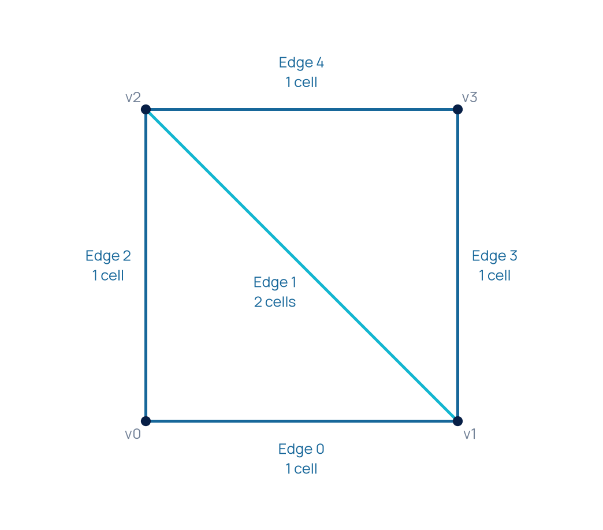

Mesh connectivity
Prepare and query incidence relations for mesh algorithms.
Incidence and adjacency
Incidence associates an entity with its lower- or higher-dimensional neighbors. An edge-to-cell relation answers which cells contain that edge. A same-dimensional adjacency relation answers which cells are neighbors under the connectivity implementation's convention.
Relation notation
The pair identifies the source and target dimensions. compute(d1, d2) prepares that relation. Indices inside an incidence row identify entities of dimension d2.
Prepare relations
The two-triangle example explicitly requests the relations used by its subsequent edge and cell queries.
Mesh mesh = Mesh().UniformGrid(Polytope::Type::Triangle, {2, 2}); auto& connectivity = mesh.getConnectivity(); connectivity.compute(1, 2); connectivity.compute(2, 1);
Discover mode creates missing lower-dimensional entities. Restrict mode computes using existing entities. See Connectivity for that construction policy.
Select the relation
Two-dimensional meshes
| Relation | Question |
|---|---|
(0, 2) | Which cells contain a vertex? |
(1, 2) | Which cells contain an edge? |
(2, 0) | Which vertices define a cell? |
(2, 1) | Which edges bound a cell? |
(2, 2) | Which cells are adjacent? |
Three-dimensional meshes
Replace cell dimension two by three. Facets then have dimension two; compute(2, 3) is the face-to-cell relation used by boundary algorithms. Edge-based operations can also require (1, 3) or (3, 1).
Recognize the boundary
A facet with one incident cell is on the boundary. On a conforming manifold mesh, an interior facet has two incident cells. Prepare (d-1, d) before boundary iteration, boundary integration or essential boundary conditions.
Read an incidence row
getIncidence({sourceDimension, targetDimension}, sourceIndex) returns the target indices associated with one source entity.
size_t boundaryEdges = 0; for (auto edge = mesh.getFace(); !edge.end(); ++edge) { const auto& cells = connectivity.getIncidence({1, 2}, edge->getIndex()); std::cout << "Edge " << edge->getIndex() << ": " << cells.size() << " incident cell(s)"; if (edge->isBoundary()) { ++boundaryEdges; std::cout << " [boundary]"; } std::cout << std::endl; } std::cout << "Vertices: " << mesh.getVertexCount() << ", edges: " << connectivity.getCount(1) << ", cells: " << mesh.getCellCount() << ", boundary edges: " << boundaryEdges << std::endl;
Inspect a small mesh

Build and run Connectivity. The full source and exported CSV files are explained in Computing mesh connectivity.
Reuse prepared relations
Construction cost
Relation construction can discover entities and allocate incidence rows. Prepare the relations needed by the algorithm before repeated traversal. Recompute them after topology changes according to the mesh operation's invalidation contract.
Measure representative work
A timing study should record mesh counts, requested relation pairs, discovery mode and whether the relation was already computed. Use a separate benchmark for performance measurements; the tutorial mesh keeps every incidence row small enough to inspect.
Algorithm prerequisites
| Operation | Required relation |
|---|---|
| Boundary traversal and Dirichlet conditions | (d-1, d) |
| Neighbor traversal and balanced partitioning | (d, d) |
| Cell-edge traversal | (d, 1) |
| Vertex-to-cell traversal | (0, d) |